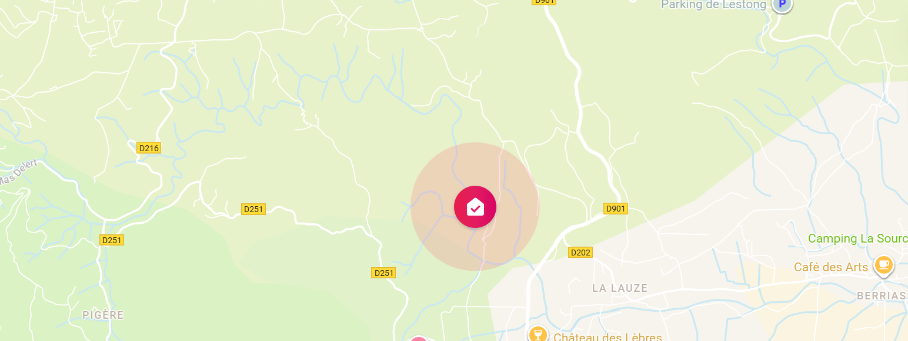
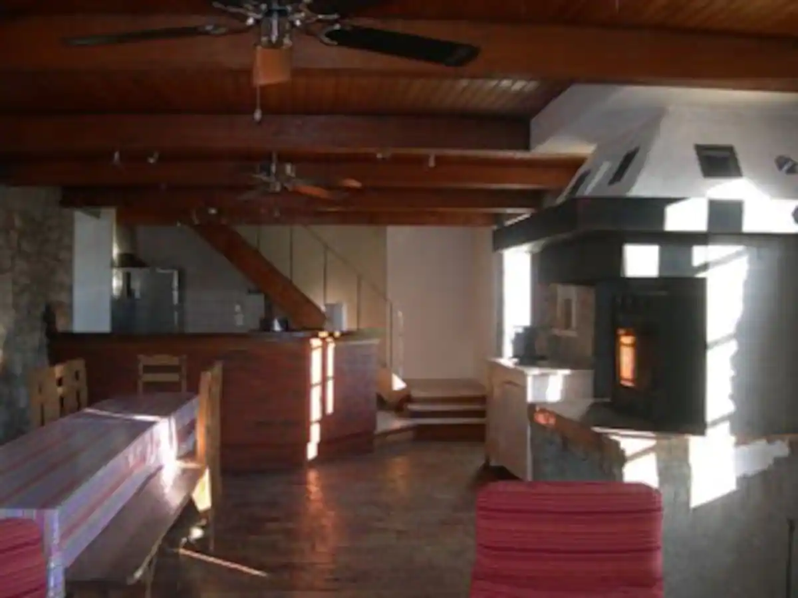
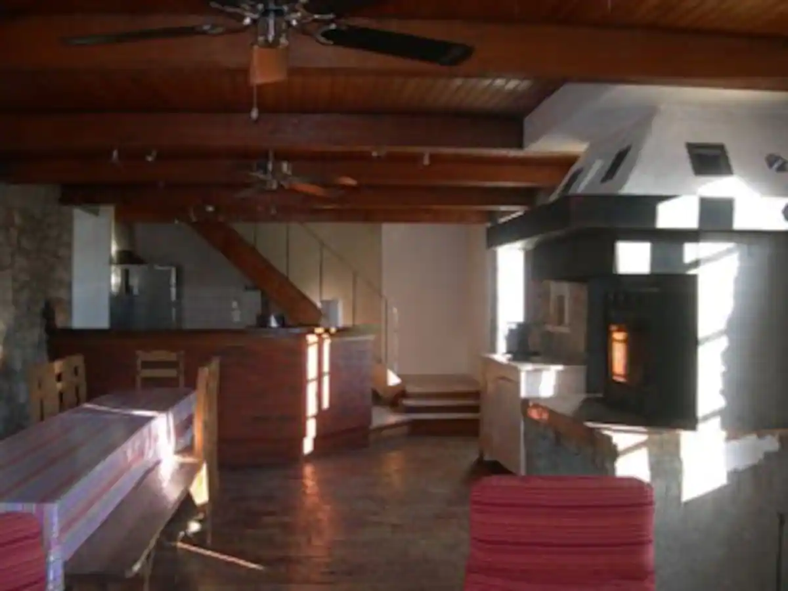

907 €
pour 2 nuits (week-end hors saison)
≈ 50 € par personne (pour 18 pers.)
Tarifs 2026 – Juillet/août : capacité limitée à 14-16 couchages
Nous consulter pour semaines, ponts et autres périodes
Localisation & Environnement
Le gîte est niché au cœur de la vallée du Granzon, dans une ancienne magnanerie entièrement restaurée.
Isolation totale pour un calme absolu, tout en restant à seulement 6-8 km de tous commerces (2 supermarchés inclus) et des principales activités du Sud Ardèche.

Le gîte en images (13 photos prévues)
 
